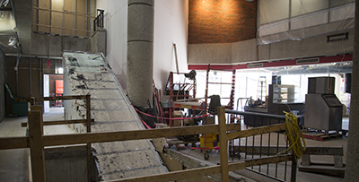
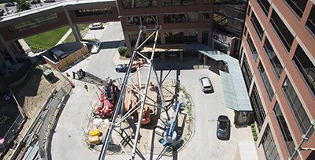
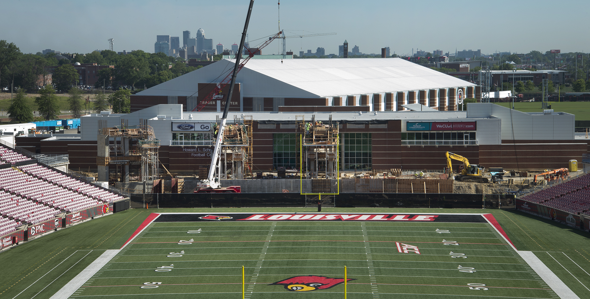

Thanks to our dedicated employees, ESPN’s College GameDay LIVE broadcast was a success! The ESPN Senior Producer said it best: “The Louisville Administration, Grounds/Facilities, and Athletic staff pulled out all the stops and accommodated all of the last minute planning and requests. Absolutely one of the best groups we have worked with during my tenure on College GameDay!” Take a look at our photos from Friday and Saturday.
Swain Student Activity Center Renovation and Expansion

Our $40 million renovation project is a capital makeover to the current 365,000 sq. ft. of space, including a 32,775 sq. ft. expansion. The UofL community will see all three levels of the building transform. Exterior changes, increased dining options and a new campus store are simply the beginning. The new SAC will offer greater meeting places for the more than 400 recognized student organizations and unique common areas where students can socialize and study. Several new venues expected to open fall 2017.
Belknap Academic Classroom Building
Progress continues on UofL’s new, state-of-the-art, 161,000 sq. ft. classroom building that will enhance learning and provide a variety of services to faculty and students. Expected to open for the fall 2018 semester, the four-story, $80 million academic building will serve undergraduate students on the Belknap Campus by housing 17 technology-advanced classrooms and science labs as well as group study areas, gathering spaces and food service options.
Pediatric Medical Office Building

We’re building the future of pediatric care with a new 170,000 sq. ft. medical office building at the School of Medicine to house all of the UofL Physicians pediatric specialty clinical practices, with a large general pediatrics location on the ground floor. The eight-story building will have seven clinical floors plus a lab, pharmacy and radiology services. Impressive features include a walkable rooftop garden and state-of-the-art conference area.
Papa John’s Stadium Expansion

Proud to be Coming Full Circle with the expansion to create a 360-degree stadium. This $55 million project at UofL's Papa John's Stadium will add 10,000 new seats in the north end zone and enhance the student-athlete experience. Funded entirely by UofL Athletics, the project does not utilize any student fees, university, state or federal subsidies. The 70,000 sq. ft. expansion, including 10,000 sq. ft. for improvements to the team conditioning, training and therapeutic support, is expected to be ready for the 2018 football season.
Hours Saved
Our continuous quality improvements for administrative functions and operations have already shown to increase productivity and make our employee’s day-to-day business lives easier. By eliminating redundancies and taking a new approach to key systems, saving hours also means saving money.Customer Service Satisfaction
Business Operations walk-in service center and online employee self-service portal are part of our increased effort to improve the way we do business. With their Miller IT Center lower level location, Bus Ops has achieved a 99% satisfaction rating from their walk-in customers.Police Review
The Federal Bureau of Investigation (FBI) gave our University of Louisville Police Department (ULPD) Communication Center a perfect score, with zero errors, on their most recent bi-yearly audit. This number reflects how important we think public safety is in our UofL community.We Have Exciting Things Happening!
We’re transforming UofL by continuing to build and promote development for our students, faculty and staff. Look in on our work-in-progress via streaming webcam. With this construction camera, you can watch the progress of the south section of the Swain Student Activities Center.
our office
We administer the University’s business, maintenance, safety and technical operations while increasing customer service and operational accountability. This office includes the Finance and Administrative Support Team (FAST) which supports the employment transactions, financial transactions and financial reporting for all of our units.
information technology
Information Technology (IT) provides a wide scope of technology services and solutions. IT maintains the campus networks, campus-wide voice over IP telephone systems and a variety of enterprise business systems such as PeopleSoft Finance, Human Capital Management and Campus Solutions. IT provides an extensive array of advanced research computing and state-of-the-art support with their Help Desk and direct support services for students, faculty and staff.
business services
Business Services works to manage all of the operational units that deliver commercial and professional services to faculty, staff, students and visitors. Areas: Parking and Transportation, Risk Management, Purchasing & Procurement, Print and Copy Management, Card Services, Mail Services, Campus Leasing and Contract Services (which includes UofL's Campus Stores, Dining Services, vending and the Commonwealth Credit Union).
public safety
We maintain public peace and safety while safeguarding the assets of the institution and its faculty, staff, students and visitors. The department includes the University of Louisville Police Department (ULPD) as affiliated with Louisville Metro Police Department. It additionally handles medical and fire emergencies, event security, various safety programs, police escort services, facility access, emergency communications and security monitoring on all UofL campuses.
performance improvement & business analytics
PIBA works to deliver streamlined business processes, transformative technology solutions, effective project management and responsive data analytics. The units under PIBA develop and implement continuous quality improvements for numerous administrative operations. These include the areas responsible for business operations, the finance and human resources ERP solutions, project management, business intelligence, digital communication and other quality improvement initiatives.
facilities management
Our offices include the University Planning, Design, and Construction (UPDC), Environmental Health and Safety (DEHS), and Physical Plant departments. In addition to being responsible for the operation and maintenance of agency facilities, whether owned or leased, we manage all design and construction phase activities for new capital construction and major renovation projects. Additionally, our experts maintain all biological, radiation and workplace safety coordination, collection and disposition.
▲